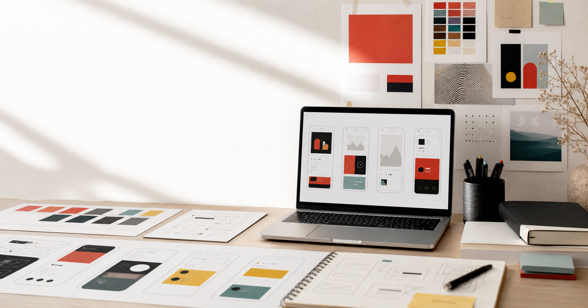

Visual identity system
A brand world translated into logo rules, typography, color, packaging, and campaign layouts.

Graphic design student evolving into UX/UI
A portfolio for brand systems, editorial experiments, UX research, interface prototypes, and the stories behind each project.
My work starts with typography, image, and composition, then moves toward user journeys, information architecture, and digital touchpoints. I am especially interested in how a strong visual language can make products easier to understand and more memorable to use.
These studies connect visual craft with UX thinking: context, process, design decisions, and the reflection that makes each project useful for the next one.
A brand world translated into logo rules, typography, color, packaging, and campaign layouts.
A user flow and prototype that turns visual hierarchy into clear, repeatable actions.
An editorial system exploring rhythm, grid, hierarchy, and the pacing of long-form content.
A cross-channel concept connecting signs, printed material, and digital interface moments.
I present each project through the questions a master's admissions team or design lead will ask: why it exists, how decisions were made, and what changed through iteration.
Define audience, context, constraints, and the design question before choosing a visual direction.
Turn typography, color, layout, and component behavior into rules that can scale.
Use wireframes, interaction states, and Figma prototypes to test the flow before polishing screens.
Show what improved, what remained unresolved, and what the next iteration would explore.
I am building a practice that combines visual sensitivity with product logic. Graphic design taught me how to make people notice, read, and feel. UX/UI asks me to go further: to understand behavior, reduce friction, and design systems that remain useful after the first impression.
Now
Curating case studies, refining Figma prototypes, and strengthening research-led storytelling.
Graphic design studies
Coursework across typography, identity, editorial design, image-making, and design critique.
Practice
Selected works can include school briefs, freelance pieces, exhibitions, workshops, and self-initiated concepts.